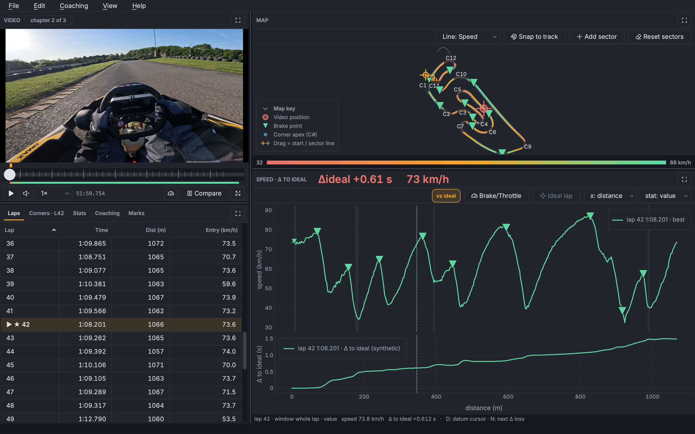
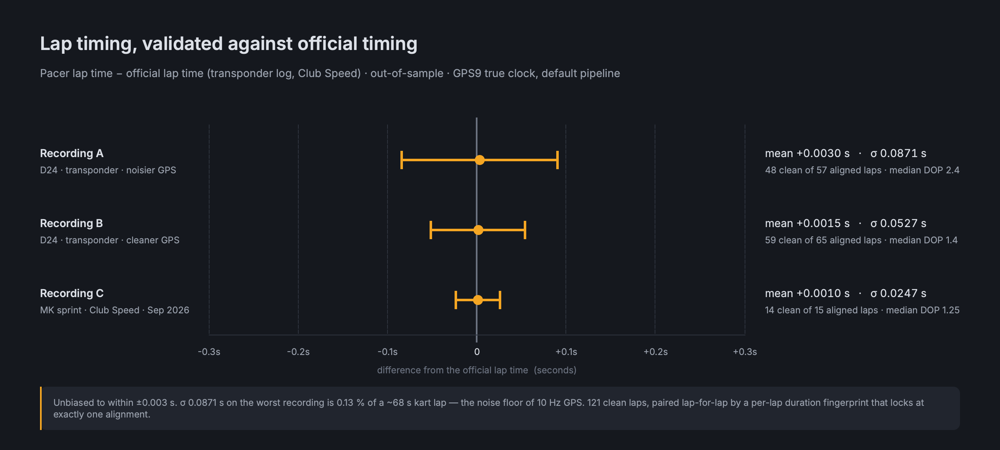
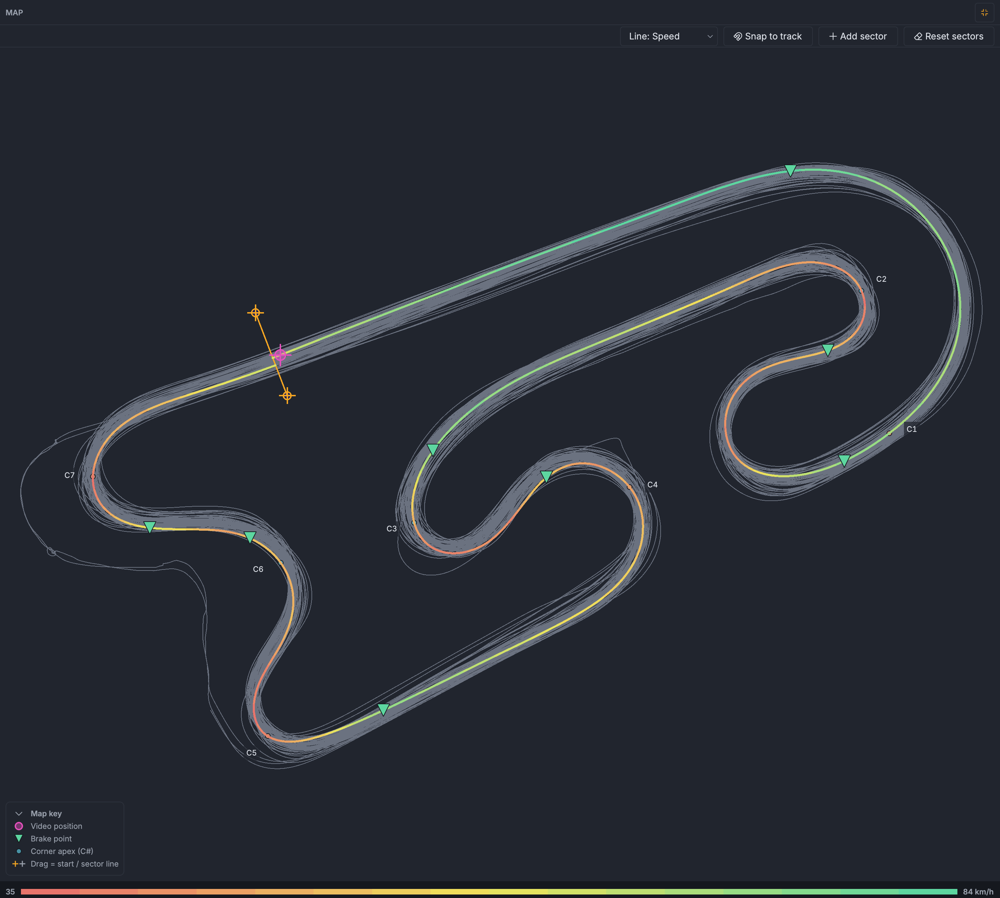
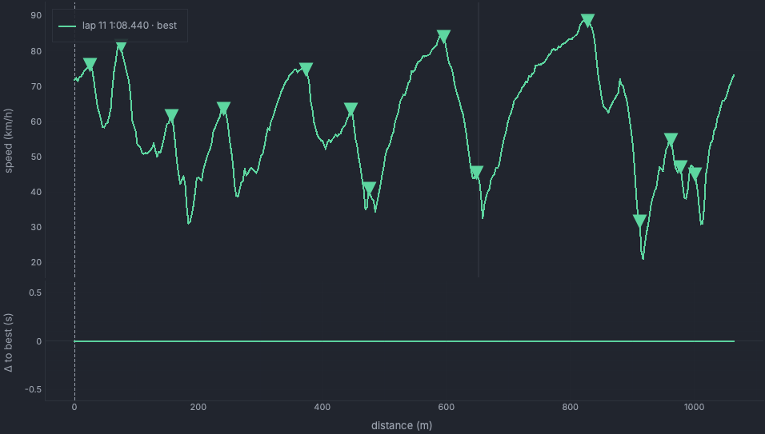
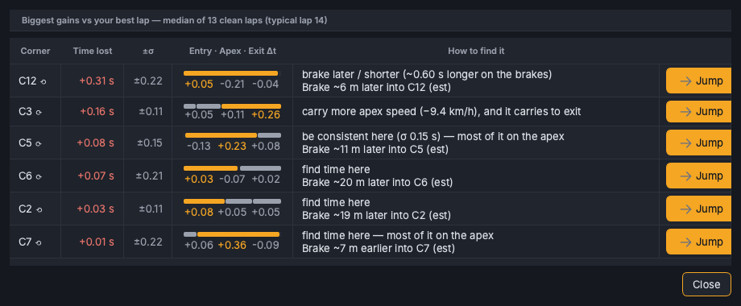

Race telemetry · GoPro-native · macOS
Pacer turns a single GoPro recording into a full telemetry workstation — track map, lap-by-lap deltas, synced video, driving analysis, and a g-meter — from the GPS and motion data the camera already records. No transponder, no data logger, no cloud, no extra hardware.

Accuracy — the moat
Pacer times laps on the camera's own GPS true-clock instead of the video/sample clock that consumer tools use (which drifts ~0.1%). The result sits at the noise floor of 10 Hz GPS — and we can show, with data, that it's irreducible from the streams a GoPro records.

Features
Lap and sector times, a racing line you can pick apart, deltas to your best lap, braking and grip — without buying or wiring anything.

Racing line coloured by speed, Δ-to-best, grip, or elevation — with brake points and draggable start/sector lines you can re-position to re-segment the session.

Speed and cumulative time delta against your best lap, distance-aligned so corners line up.

Where you're losing time to your best lap, corner by corner.
How it's built
A small, fast core (pacer/) does the load-bearing work — GPMF ingest, geometry, lap/sector segmentation, and GPS9 true-clock timing. It's a clean-room, independently authored implementation.
The core's types are bound to Python via nanobind (litgen-generated), consumed by a PySide6 + pyqtgraph desktop UI (studio/) that does the draggable map handles and frame-accurate video↔telemetry sync natively.
Every core-math refactor is proven byte-identical (max|Δ| = 0) against a dense fingerprint of a real recording's whole analysis API before it lands — and CI runs the same machinery over a deterministic synthetic session. Correctness is a gate, not a hope.
Pacer is developed solo, with the implementation handed to LLM coding agents under a strict discipline: every change is one focused pull request, gated by the golden-equivalence check (max|Δ| = 0 on real footage) and the full ctest suite before it merges. The rigor above — transponder validation, the byte-identical core-math gate, the out-of-sample research — is what makes that workflow safe. The guardrails do the trusting so the agents can do the typing.
Non-goals
Stating the boundaries is part of the design.
Get Pacer
Today Pacer installs from source — one command with pixi, no manual toolchain setup. A prebuilt, double-clickable Pacer Studio.app (.dmg) is planned but not yet published.
# 3rdparty deps (gpmf-parser, nanobind)
git submodule update --init --recursive
# environment + editable Python bindings
pixi install
# build + launch on a recording
pixi run studio -- /path/to/GX010060.MP4GoPro chapter siblings (GX01…, GX02…) are chained automatically. On a track Pacer doesn't know yet, it places a sensible start/finish line and flags the timing as provisional — drag the line on the map to where a lap begins and it's remembered for that recording.